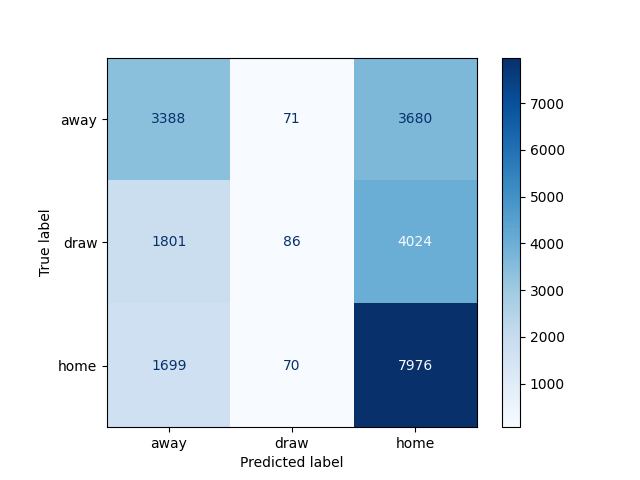

“Football Match Probability Prediction”进展报告
1. 数据获取及预处理
1.1 数据来源
数据来源于Kaggle的Football Match Probability Prediction项目，数据有训练集和测试集，在训练集包括110938个样本及190个字段，在测试集上包括72711个样本及189个字段。
1.2 数据说明
字段分为描述字段和历史信息字段
描述字段
- target 比赛的结果：home、draw、away，分别对应主场获胜、平局和客场获胜。
- home_team_name：主场球队的名称。
- away_team_name：客场球队的名称。
- match_date：比赛日期（UTC）。
- league_name：联赛名。
- league_id：联赛id，同一个联赛名可有两个不同的id。
- is_cup：如果值为1表示该比赛为杯赛。
- home_team_coach_id：主队教练的id。
- away_team_coach_id：客队教练的id。
历史信息字段
该字段有从1到10的索引，表示两支球队最近十场比赛的信息，索引越大其对应的比赛的时间越远。
- home_team_history_match_date_{i}：主队上第i场比赛的日期。
- home_team_history_is_play_home_{i}：若为1，表示主队在主场比赛。
- home_team_history_is_cup_{i}：若为1，表示该比赛为杯赛。
- home_team_history_goal_{i}：主队在上第i场比赛中的进球数。
- home_team_history_opponent_goal_{i}：主队在上第i场比赛中的丢球数。
- home_team_history_rating_{i}：主队在上第i场比赛的评级（赛前评级）。
- home_team_history_opponent_rating_{i}：主队在上第i场比赛的对手的评级（赛前评级）。
- home_team_history_coach_{i}：主队在上第i场比赛的教练的id。
- home_team_history_league_id_{i}：主队在上第i场比赛的联赛的id。
- away_team_history_match_date：客队上第i场比赛的日期。
- away_team_history_is_play_home_{i}：若为1，表示客队在主场比赛。
- away_team_history_is_cup_{i}：若为1，表示该比赛为杯赛。
- away_team_history_goal_{i}：客队在上第i场比赛中的进球数。
- away_team_history_opponent_goal_{i}：客队在上第i场比赛中的丢球数。
- away_team_history_rating_{i}：客队在上第i场比赛的评级（赛前评级）。
- away_team_history_opponent_rating_{i}：客队在上第i场比赛的对手的评级（赛前评级）。
- away_team_history_coach_{i}：客队在上第i场比赛的教练的id。
- away_team_history_league_id_{i}：客队在上第i场比赛的联赛的id。
1.3 数据预处理
数据预处理部分包含以下内容：
home_team_history_match_days_ago{i}和away_team_history_match_days_ago{i}为UTC时间格式，我们用match_date（当前比赛的时间）与其相减，将数据类型转换为整型。
我们对target字段的值进行了以下转换：{'away': 0, 'draw': 1, 'home': 2}
我们将训练数据集按照4:1进行划分，80%的数据用作模型的训练数据，20%的数据用于对模型进行验证。
我们对数据集中的重要特征进行了提取，分别为以下字段：
- id
- league_name
- target_int（转换成整形后的target）
- home_team_history_goal_{i}
- home_team_history_opponent_goal_{i}
- home_team_history_is_play_home_{i}
- home_team_history_rating_{i}
- home_team_history_opponent_rating_{i}
- home_team_history_match_days_ago_{i}
- away_team_history_goal_{i}
- away_team_history_opponent_goal_{i}
- away_team_history_rating_{i}
- away_team_history_opponent_rating_{i}
- away_team_history_match_days_ago_{i}
对于历史信息字段中存在的缺失值（比如上十场比赛的信息不完整），我们采用了设置mask掩码的方式进行填充，以便后续使用tf.keras.layers.Masking层，该层将使输入张量中所有等于该mask的值在下游层中被屏蔽。
数据标准化：不同的数据特征有着不同的评价指标，处于不同的数据范围，为了提高梯度下降求最优解的速度，使求解最优解的过程更容易收敛，对数据进行标准化处理。因为数据集中离散群的数据较多，我们使用了sklearn.preprocessing的RobustScaler（稳健标准化），该方法使用了具有鲁棒性的统计量缩放带有异常值（离群值）的数据。
2. 数据分析与可视化
数据分析包含以下部分： 该部分主要分析预处理后的数据，以X_train.csv为分析对象。 查看数据该要，该数据有88141条，其中每列的数据见数据预处理部分。主客场胜负球进行分析，计算出所有球队近十次球赛中，主场和客场分别的净胜球数，并画出饼形图。 可以看出，在主场，净胜球为正数的球队占49.42%，净胜球为负数的球队占50.58%；在客场，净胜球为正数的球队占49.97%，净胜球为负数的球队占50.03%；主场和客场的净胜球正负基本持平，因此主客场对净胜球正负的影响不大。
3. 模型选取
我们根据数据预处理中提取的特征，使用了基于LSTM的循环神经网络预测模型对足球比赛的输赢结果进行预测。
因为历史信息字段有索引1-10，属于序列数据，并与时间相关联，循环神经网络适合处理和预测序列数据，但普通的RNN在解决长期依赖问题时效果不好，而长期记忆网络（Long short-term memory, LSTM），是一种特殊的RNN，其在单元结构中加入了输入门、遗忘门、输出门，主要是为了解决长序列训练过程中的梯度消失和梯度爆炸问题，相较于普通的RNN，LSTM能够在更长的序列中有更好的表现。
我们初步采用的神经网络预测模型的结构为：输入层+LSTM层+LSTM层+Dense层+Dense层+输出层。
项目代码的仓库地址：https://github.com/KevinLiu76/BIT-DataMining-FootballMatchProbabilityPrediction
4. 挖掘实验的结果
4.1 损失函数
因为均方误差(MSE)在某些情况下更新weight和bias时会很慢，所以我们采用交叉熵损失（cross-entropy）来评估预测结果，训练集和验证集的loss如下：

4.2 验证集预测结果评估
| precision | recall | F1-score | Support | |
|---|---|---|---|---|
| 0 | 0.48 | 0.49 | 0.48 | 7139 |
| 1 | 0.34 | 0.01 | 0.02 | 5911 |
| 2 | 0.51 | 0.80 | 0.62 | 9745 |
| accuracy | 0.50 | 22795 | ||
| macro avg | 0.44 | 0.43 | 0.37 | 22795 |
| weighted avg | 0.45 | 0.50 | 0.42 | 22795 |
Log loss: 1.0078876508963255

可以看出平局(draw)对log loss的影响很大，并且对平局难以预测准确。
4.3 测试集预测结果可视化

从预测结果可以看出，对平局预测主要集中在0.1-0.3之间，这导致绝大多数最终的预测结果为home或away。
5. 存在的问题
- 为什么模型难以预测平局，需要对其进行进一步的分析。
- 缺少对比实验，如传统的逻辑回归与LSTM效果的比较。
6. 下一步工作
- 对模型难以预测平局的原因进行探讨。
- 对数据进行更好的可视化展示。
- 进行对比实验，对逻辑回归与LSTM进行效果比较。
7. 任务分配与完成情况
- 王晨旭：模型的选取及挖掘实验的结果展示